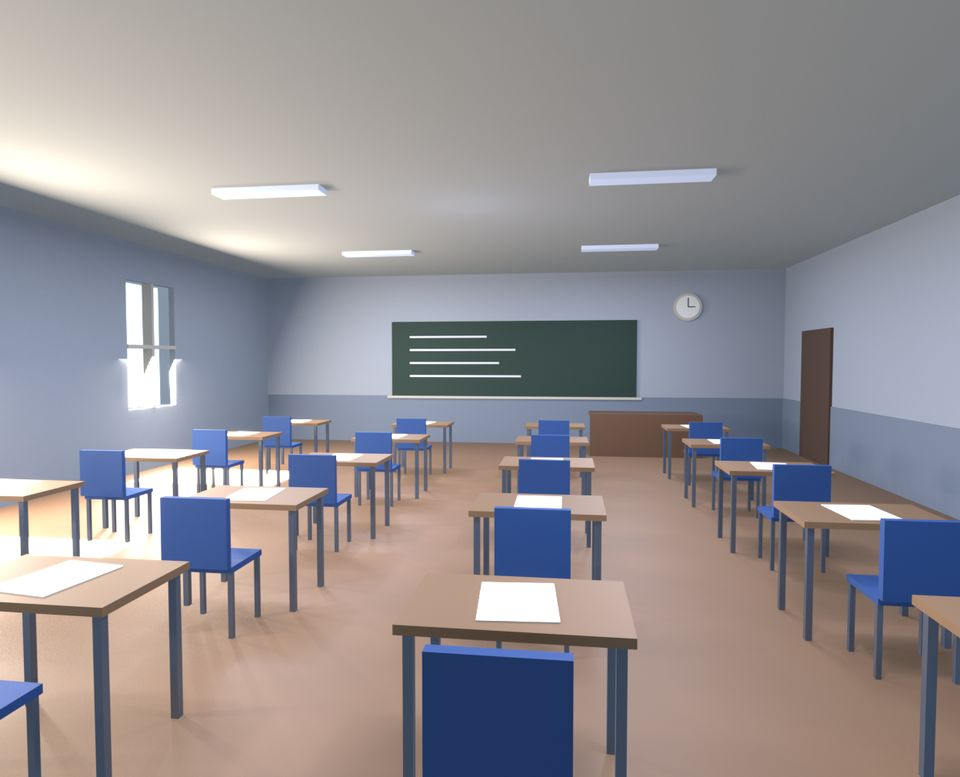
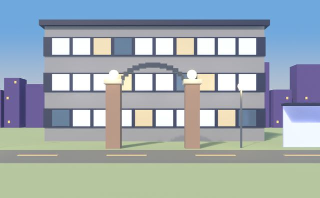
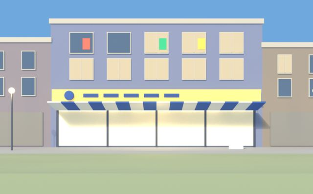
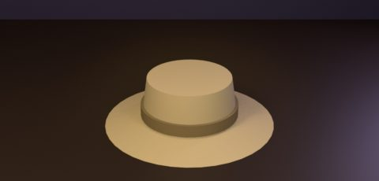
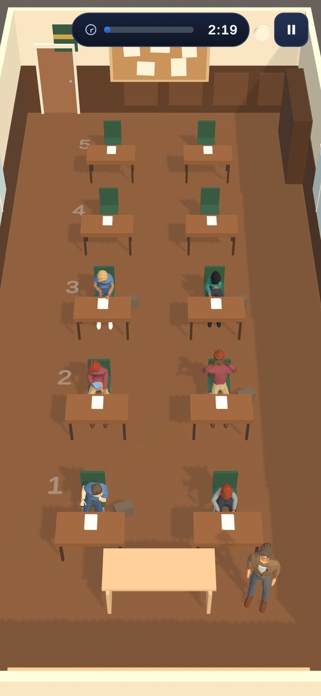
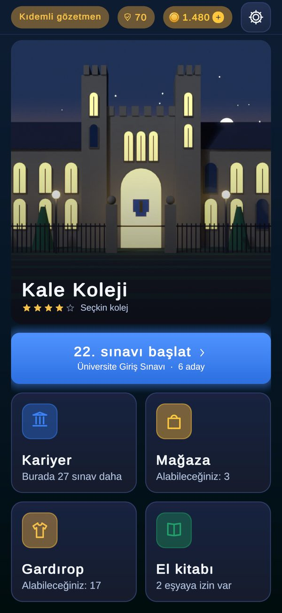
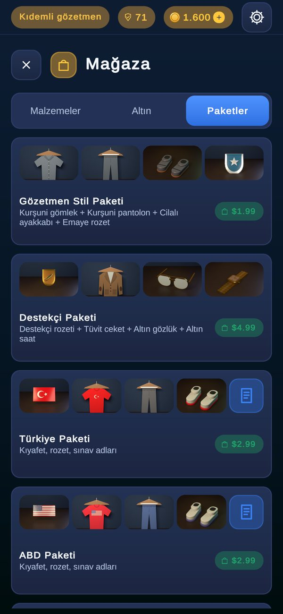
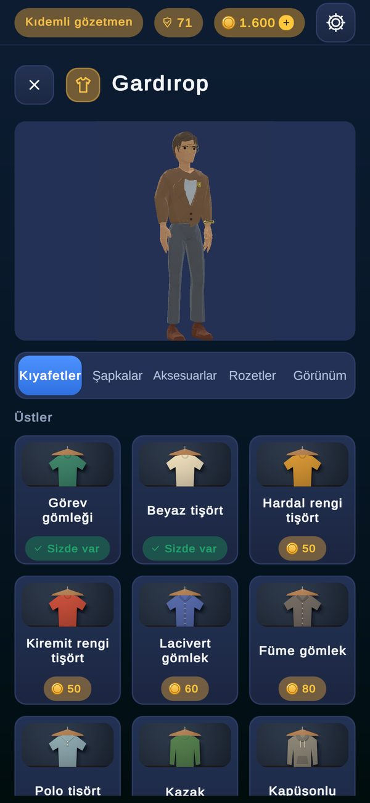
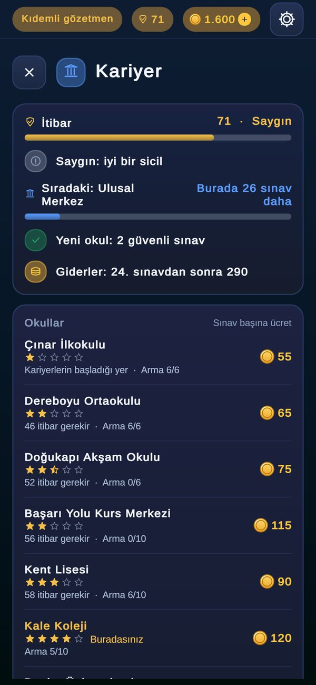

Salonu izleyin
Yana kaçan bir bakış, sıranın altında bir el, iki sıra geride bir fısıltı. Bir gözetmenin gördüğünü görürsünüz ve ne yapacağınıza siz karar verirsiniz: uyarmak, el koymak, sınavdan çıkarmak ya da görmezden gelmek.
Sınav gözetmenliği üzerine bir mobil oyun
Gerçek kararlar. Gerçek sonuçlar.
Gözetmen sizsiniz. Salonu izleyin, sıraların üstünde ne olduğuna bakın; uyarmaya, el koymaya, sınavdan çıkarmaya ya da o anı geçiştirmeye siz karar verin. Tuhaf, suçlu demek değil. Çınar İlkokulu'ndan Ulusal Sınav Merkezi'ne sekiz okulda kariyer yapın, altın kazanın ve gözetmeninizi giydirin. Reklam yok, para ödemeden baştan sona oynanır ve çevrimdışı çalışır.

Nasıl oynanır
Yana kaçan bir bakış, sıranın altında bir el, iki sıra geride bir fısıltı. Bir gözetmenin gördüğünü görürsünüz ve ne yapacağınıza siz karar verirsiniz: uyarmak, el koymak, sınavdan çıkarmak ya da görmezden gelmek.


Yere düşen bir kalem kopya kâğıdı değildir. Harekete geçmeden önce sıraların üstünde ne olduğuna ve kimin oturduğuna bakın. Yanlış bir karar size gözden kaçan bir kopya kadar pahalıya patlar ve itibarınız ikisini de unutmaz.

Çınar İlkokulu'nda başlayın ve Ulusal Sınav Merkezi'ne kadar yükselin. Her okulun kendi salonları, kendi baskısı ve kendi sürprizleri var: iş çıkışı trafiğinde bozulan arabadan ulusal sınava kadar.

İlkokul

Ortaokul

Yetişkinler için akşam ve meslek okulu

Lise

Özel sınav hazırlık kursu

Seçkin kolej

Üniversite

Ulusal sınav kurumu


Telefon dedektörü yakındaki telefonları bulur: ipucu, kanıt değil. Sınavdan önce malzemelerinizi tamamlayın ve ne zaman kullanmaya değeceğine siz karar verin.





İşinizi iyi yaparak altın kazanın ve Gardırop'ta harcayın: üstler, pantolonlar, ayakkabılar, şapkalar, gözlükler, rozetler ve çalıştığınız her okulun arması.
Reklam yok, sürpriz kutu yok, para isteyen bekleme süreleri yok. Oyunun tamamı ücretsiz oynanır; isteğe bağlı satın alımlar altın ve görünümlerden ibarettir ve ne aldığınızı her zaman bilirsiniz.
Ekran görüntüleri

Sınav salonu

Kariyer

Mağaza

Gardırop

Kariyer
Sorular
Hayır. Oyunda hiç reklam yok ve reklam kimliği kullanılmıyor.
Evet, ücretsiz oynanır ve oyunun tamamını para ödemeden oynayabilirsiniz. İsteğe bağlı satın alımlar görünümler ve altındır. Hiçbir şey rastgele değildir: ödeme yapmadan önce ne alacağınızı her zaman bilirsiniz.
Hayır, çevrimdışı oynanır. İzin verirseniz oyun, adınıza veya bir hesaba değil, rastgele bir uygulama tanımlayıcısına bağlı kullanım istatistikleri ve çökme raporları gönderir; bunu istediğiniz zaman Ayarlar'dan kapatabilirsiniz. Ayrıntılar için Gizlilik Politikası'na bakın.
English, Türkçe, Español, Français, 日本語, Português (Brasil) ve Русский.
Android telefonlarda, iPhone ve iPad'de. İki sürüm de çok yakında geliyor.
support@pencilsdowngame.com adresine yazın ya da Destek sayfasına bakın.
Gerçek kararlar. Gerçek sonuçlar.
Android ve iPhone/iPad için çok yakında.